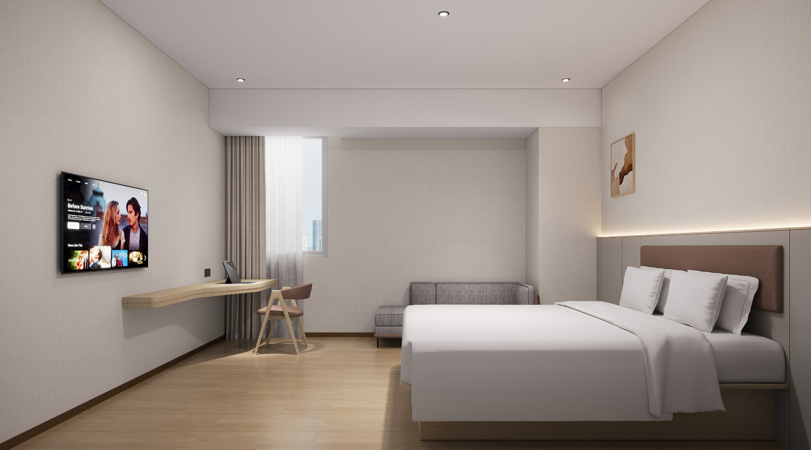
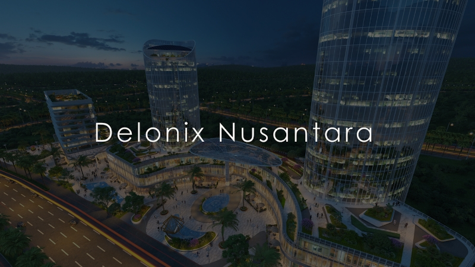
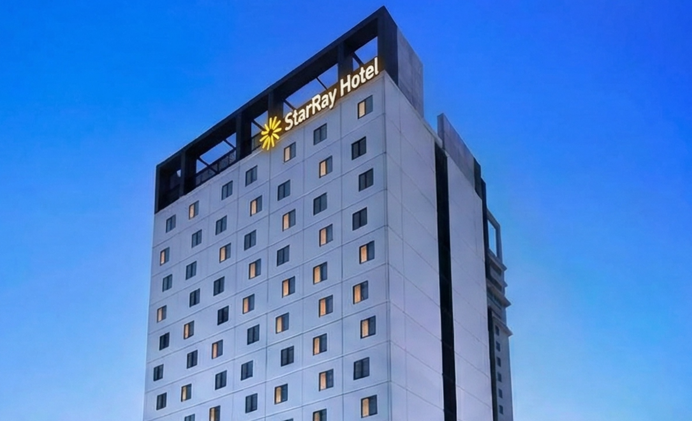
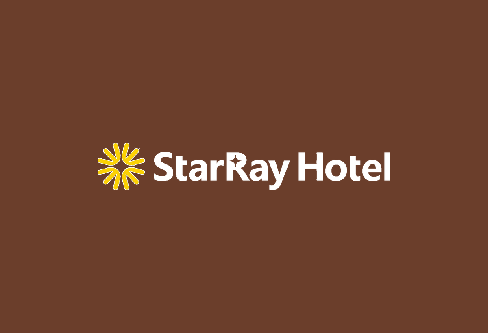
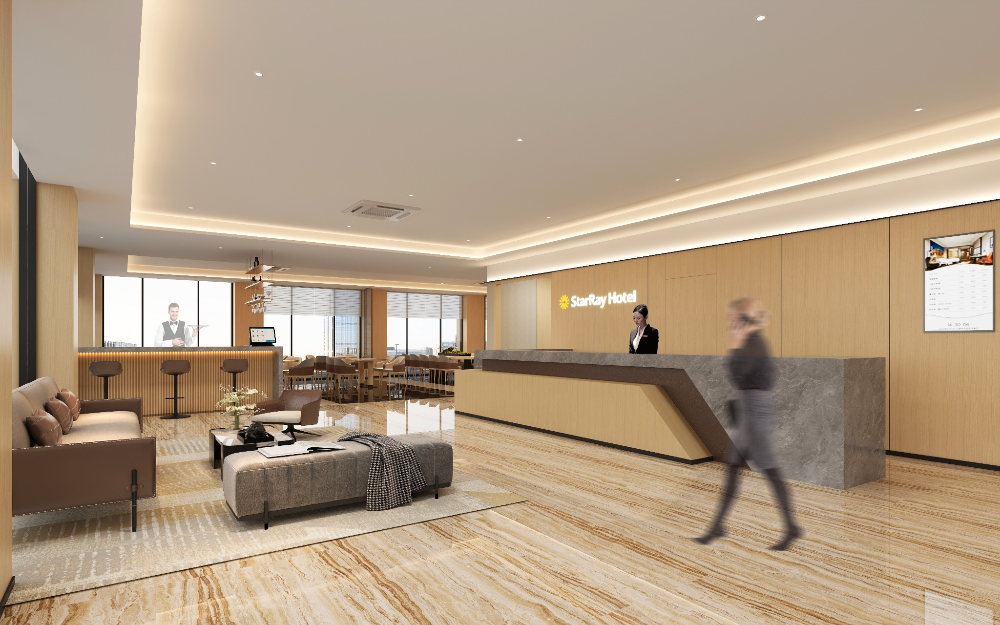
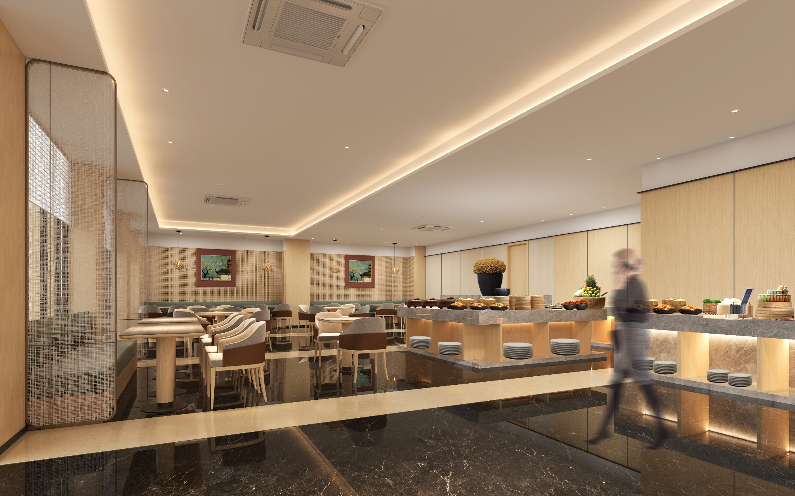

01REST
REST
Kepastian dalam Tidur
- Standar perlengkapan tidur premium
- Desain kedap suara yang menyeluruh
- Kualitas udara terstandar dan kontrol pencahayaan yang presisi
Dibangun untuk keandalan. Dirancang untuk ketenangan pikiran.
Pengalaman menginap yang terasa andal, dapat diprediksi, dan menenangkan.
Tentang Kami
Perusahaan
Kami menggabungkan kapabilitas brand, sistem operasi, eksekusi lokal, integrasi rantai pasok, serta kapabilitas manajemen berbasis IT / AI untuk menghadirkan solusi hotel yang andal, dapat direplikasi, dan skalabel bagi pemilik maupun investor.



Pendiri
Pendiri · StarRay Hotel Group
Co-Investor · Delonix Bravo Investment - Investasi bersama dengan Alex Zheng (Founder & Chairman Delonix Group) dalam proyek mixed-use Nusantara.
Mantan President · Delonix Group Indonesia - Delonix mengelola lebih dari 1.600 hotel di Tiongkok, Indonesia, dan Jepang.
Mantan CEO · Plateno Group International - Plateno mengelola lebih dari 4.000 hotel di Tiongkok.
04 · Kisah Brand StarRay

Di era yang dipenuhi kecepatan, kebisingan, dan ketidakpastian, StarRay ingin menjadi kehadiran yang paling tepercaya dan paling dapat diandalkan dalam setiap perjalanan.
Visi Brand
Menjadi bintang penunjuk dalam perjalanan — menerangi setiap perjalanan dengan kehadiran yang stabil dan tepercaya, serta menghadirkan tempat di mana setiap tamu dapat menemukan rasa tenang dan merasa nyaman.
05 · Esensi Brand
Tak peduli seberapa cepat, bising, atau gelisah kota menjadi, tamu harus langsung merasa mantap begitu melangkah masuk ke StarRay.
Inti kami selalu satu dan tak berubah: keandalan.

Kepastian dalam Tidur

Kepastian dalam Kenyamanan

Kepastian dalam Pemulihan
Proyek Saat Ini
Tiga proyek aktif dan representatif menunjukkan bagaimana StarRay menerjemahkan positioning brand, disiplin operasi, dan eksekusi lokal menjadi aset nyata.
Aset yang telah beroperasi di Jakarta dan menjadi fondasi penting bagi pembuktian komersial dan operasional brand.
Partisipasi investasi bersama dalam pengembangan mixed-use seluas sekitar 100.000 sqm di ibu kota baru Indonesia.
Proyek Jakarta yang berorientasi ke depan untuk memperkuat jaringan urban brand dan kehadiran pasar jangka panjang.
07 · Paradoks Pasar
Dalam industri hotel Indonesia, pertumbuhan sering kali menutupi persoalan struktural yang lebih mendasar.
Investasi terlalu sering diarahkan ke lobi, F&B, ballroom, dan elemen fisik yang terlihat, sementara pendorong utama pengalaman tamu justru kurang didanai. Akhirnya terbentuk struktur aset yang rapuh dengan cost-per-key tinggi dan fondasi operasi yang lemah.
Model staffing yang gemuk serta fasilitas non-inti terus menguras sumber daya manajemen. Pendapatan top-line dan GOP aktual tetap terputus secara struktural, sehingga profitabilitas rentan dan tidak stabil.
Saat hotel hanya bergantung pada platform pihak ketiga untuk demand, pada dasarnya hotel berubah menjadi inventori fisik bagi channel eksternal. Tanpa demand langsung dan sistem membership milik sendiri, nilai brand tidak pernah benar-benar terakumulasi.
08 · Permainan Jangka Panjang: Membangun Nilai yang Bertahan
Hotel bukanlah transaksi jangka pendek, melainkan aset jangka panjang. Ketahanan yang sesungguhnya dibangun di atas keunggulan kompetitif yang mampu mengakumulasi nilai secara berkelanjutan: resonansi brand, membership milik sendiri, dan kapabilitas IT yang sistemik.
Kami tidak mengaburkan positioning hanya untuk menyenangkan semua orang. Dengan tetap fokus pada kebutuhan nyata target tamu kami, kami menghadirkan pengalaman yang lebih baik dengan biaya yang lebih rendah, sekaligus membangun brand yang sulit tergantikan.
Tamu yang puas pada akhirnya berubah menjadi member yang sangat loyal. Hal ini menciptakan mesin demand yang stabil dan berkelanjutan, secara signifikan menurunkan biaya akuisisi OTA, serta membangun moat nyata terhadap turnover dan pendatang baru.
Fondasi ketahanan operasi kami adalah arsitektur IT yang sangat terintegrasi. Kapabilitas AI yang siap untuk masa depan akan terus mengoptimalkan pricing, meningkatkan efisiensi, dan menurunkan overhead manajemen, sehingga efisiensi sistem berubah menjadi pengembalian jangka panjang yang berlipat.
09 · Fondasi Kapabilitas
Keunggulan kompetitif kami lahir dari integrasi yang disengaja: keahlian chain-hotel Tiongkok yang telah terbukti dikalikan dengan penguasaan mendalam atas pasar lokal Indonesia.
Tervalidasi di lebih dari 4.000 properti
Optimasi revenue berbantuan AI
Mesin demand langsung yang berulang
Siklus delivery 6–8 bulan
Pengalaman pembukaan hotel yang berhasil di Jakarta
Membangun talenta operasional lokal
Jaringan pemilik dan pemasok yang tepercaya
Penguasaan kuat atas perizinan dan kepatuhan lokal
10 · Keunggulan Eksekusi
Unit economics yang unggul di industri, dihasilkan melalui keunggulan operasional yang bersifat struktural.
Fokus belanja pada hal yang benar-benar dihargai tamu
Menghilangkan biaya dekoratif yang tidak esensial
Pengadaan dan desain yang terstandar
biaya per key dibanding rata-rata industri
Sistem pre-opening terpadu
Protokol konstruksi dan delivery yang terstandar
Jaringan vendor yang terpusat
siklus pembukaan dibanding 12–18 bulan di industri
Mesin membership milik sendiri
Kapabilitas dynamic pricing berbasis AI
Ketergantungan OTA yang lebih rendah
potensi occupancy dan ADR
Tim yang ramping dan shared services
Disiplin kontrol biaya berbasis data
Konsistensi operasi yang sistematis
kisaran target margin
Kemitraan & Kontak
Baik untuk repositioning aset, pengembangan hotel baru, maupun kemitraan modal strategis, fokusnya tetap sama: penciptaan nilai jangka panjang.
Untuk aset hotel yang membutuhkan peningkatan brand, penguatan operasi, dan restrukturisasi profit.
Untuk proyek new-build, conversion, dan peluang pre-opening management dengan ambisi operasional yang jelas.
Untuk mitra yang melihat peluang jangka panjang di pasar hospitality urban Indonesia.
Untuk proyek, kemitraan, atau pertanyaan investasi, silakan hubungi kami secara langsung.
Hubungi kami langsung melalui email. Klik tombol di bawah untuk membuka draft email ke kotak masuk kami.